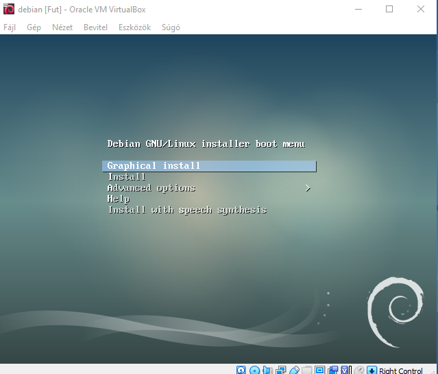
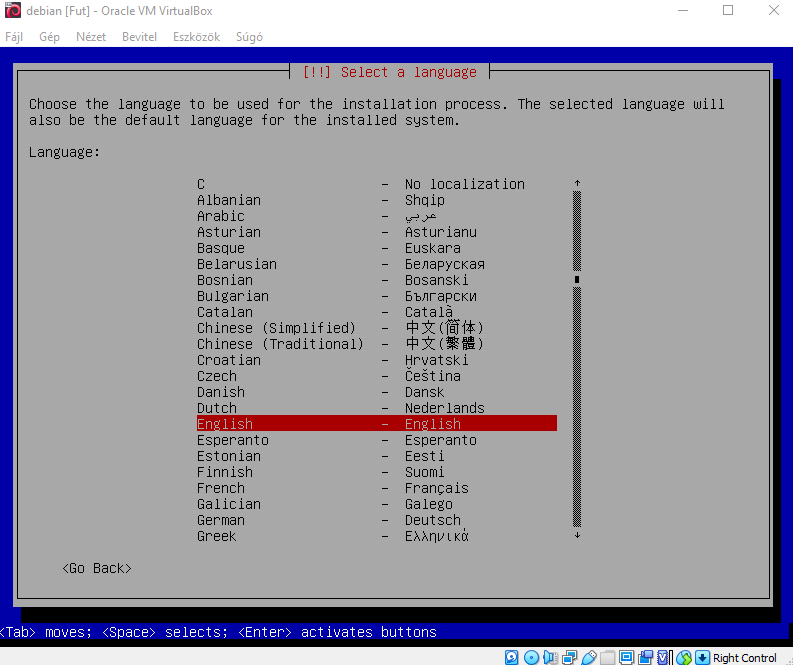
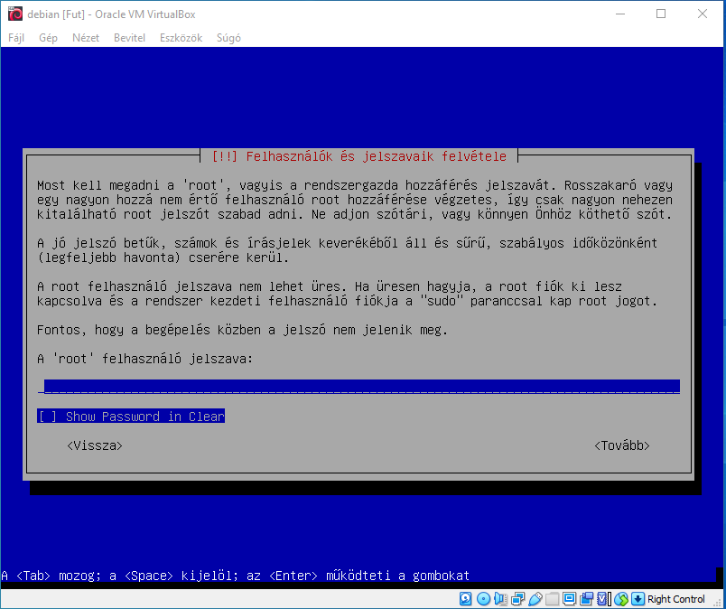
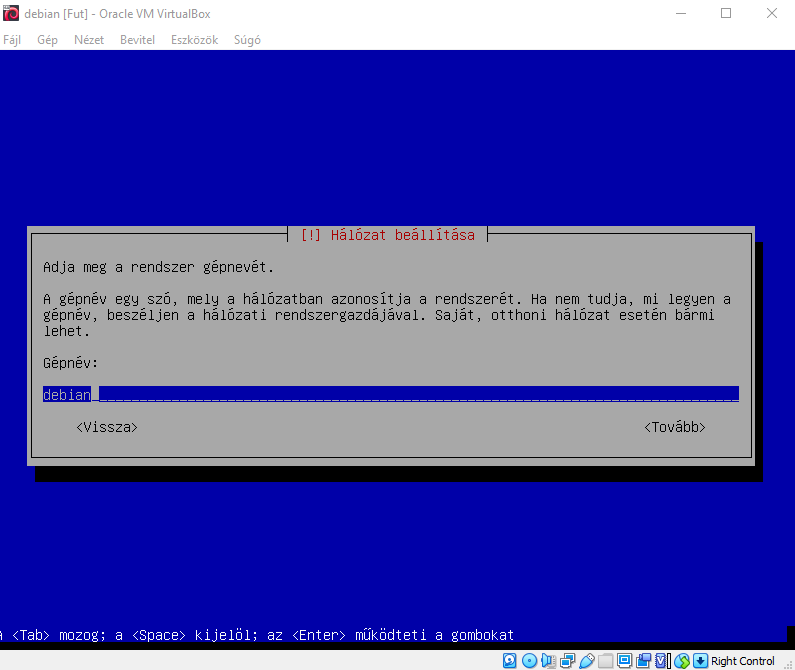
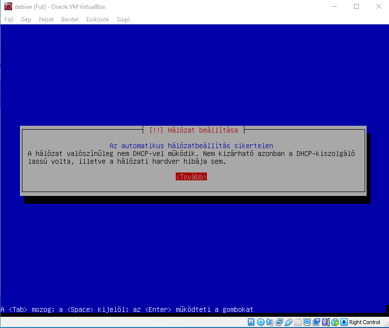

Amikor betöltött a Pendriveon lévő telepítő, akkor válasszuk ki a nekünk tetszőleges telepítési formát jelen esetben a Sima Install-t válasszuk. Amint rámentünk az install-ra válasszuk ki a nyelvet, illetve a billentyűkiosztást. Ezután elkezd töltögetni kicsit a telepítő, majd elkezdi megkeresni a hálózatot. Ezután a teleptő kér egy gépnevet, ami látszódni fog a hálózaton is. Ezt követően a telepítő kér egy ROOT jelszót ami egy Rendszergazdai jogosultsággal bír, de amennyiben tovább lépünk akkor kér egy másik felhasználót, amihez csak akkor van ROOT hozzáférése ha kihagyja a root jelszó beírását.




